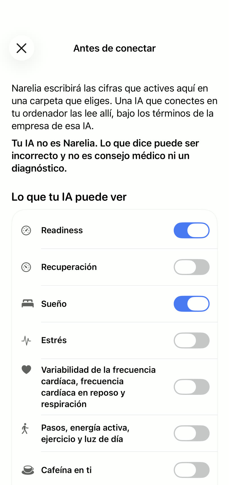
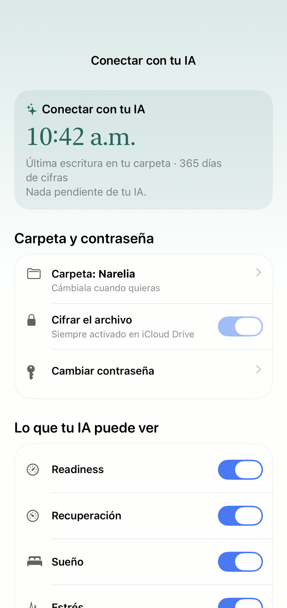
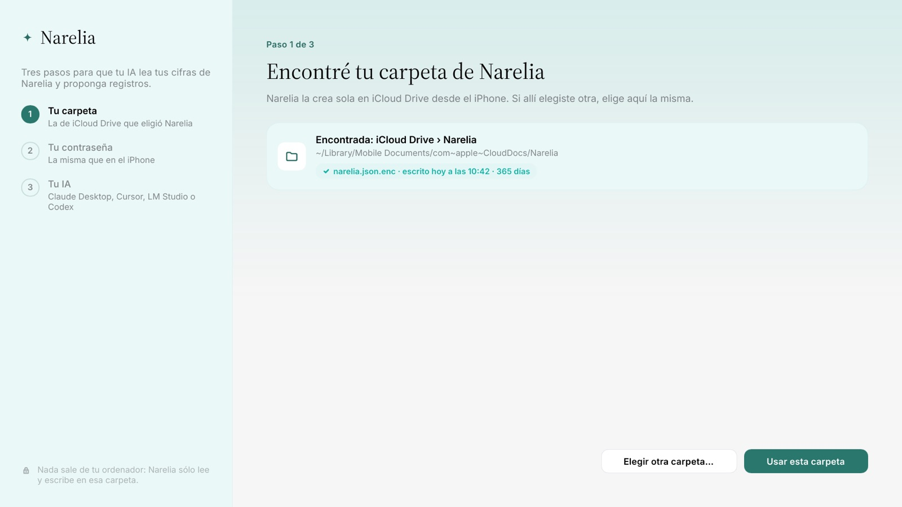
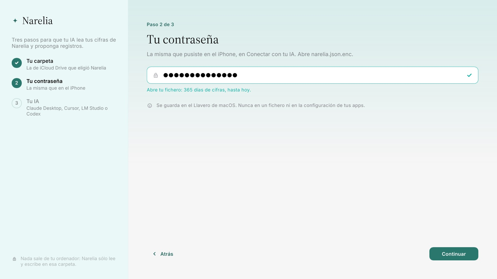
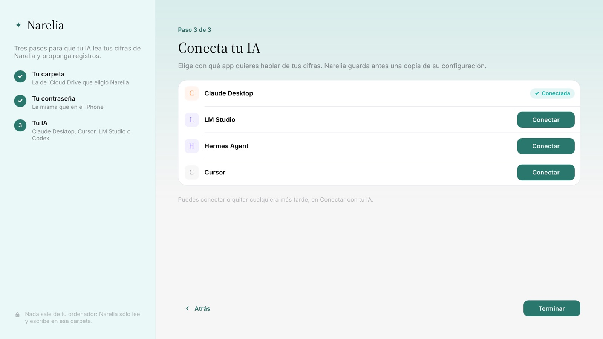
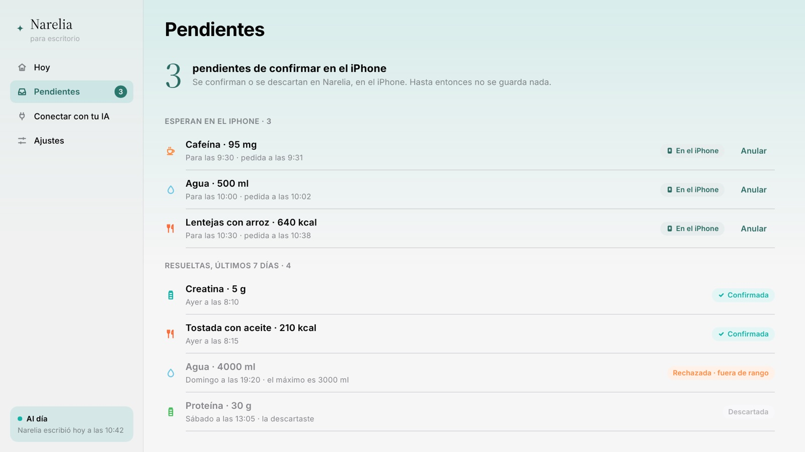
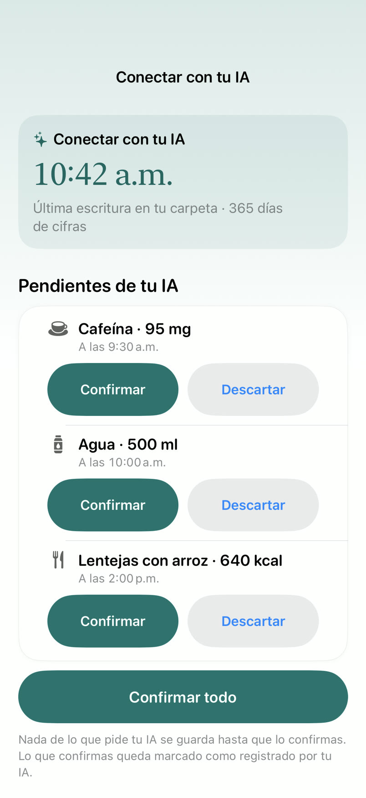

Guía visual · 5 pasos · unos 10 minutos
Conecta Narelia con tu IA.
Con Narelia para Mac, la IA que ya usas —Claude, Codex, Cursor, OpenClaw y 18 más— lee tus cifras de Narelia y puede proponer registros. Lo hace con narelia-mcp, un servidor MCP que corre en tu propio Mac. Nada pasa por un servidor de Narelia, y nada se guarda hasta que lo confirmas en el iPhone.
Lo que necesitas
- Un Mac con macOS 13 o posterior Apple silicon o Intel.
- Narelia 1.1.22 o posterior con Pro En tu iPhone, desde la App Store.
- iCloud Drive en los dos Con la misma cuenta de Apple.
- Una app de IA con MCP Cualquiera de las 22 de la lista.
En el Mac
Instala Narelia para Mac
- Descarga el .dmg de la última versión: Descargar para macOS
- Ábrelo y arrastra Narelia a la carpeta Aplicaciones.
- La primera vez, ábrela con clic derecho. La app aún no está firmada ni notarizada, así que macOS avisa de que no puede comprobarla. En Aplicaciones, haz clic derecho (o Control-clic) sobre Narelia → «Abrir» → «Abrir» (1.1).
- Si en macOS 15 o posterior sólo sale «Hecho», ve a Ajustes del Sistema → Privacidad y seguridad, baja hasta el aviso de Narelia y pulsa «Abrir igualmente» (1.2). Sólo hace falta una vez.
En el iPhone, luego en el Mac
Empareja el Mac con el iPhone
El iPhone y el Mac no se hablan directamente: comparten una carpeta de iCloud Drive y una contraseña. El iPhone deja allí un fichero cifrado y el Mac lo abre con esa misma contraseña.
- En el iPhone, abre Narelia → Ajustes → «Conectar con tu IA». Elige lo que tu IA puede ver y pulsa «Aceptar y continuar» (2.1).
- Pulsa «Usar iCloud Drive › Narelia»: Narelia crea la carpeta sola. Luego «Poner contraseña», de al menos 8 caracteres. Guárdala: Narelia no puede recuperarla (2.2).
- En el Mac, abre Narelia. Encuentra la carpeta sola; pulsa «Usar esta carpeta» (2.3).
- Escribe la misma contraseña del iPhone y pulsa «Continuar». Se guarda en el Llavero de macOS, nunca en un fichero (2.4).




En el Mac
Elige tu IA
- Narelia enseña primero las apps de IA que encuentra en este Mac (3.1). Las demás siguen en la lista, en «Conectar con tu IA».
- ¿La tuya no sale? Ábrela una vez en este Mac y vuelve a Narelia. Mira su ficha en las 22 apps.

En el Mac
Pulsa «Conectar» o copia el fragmento
- 15 apps se configuran solas. Pulsa «Conectar»: Narelia añade su entrada al fichero de configuración de esa app y guarda antes una copia a su lado (
*.narelia-copia.*). Después, cierra la app de IA del todo y vuelve a abrirla (4.1). - 7 se configuran a mano (Claude Code, OpenClaw, Zed, Jan, Msty Studio, Cherry Studio y Chatbox). Pulsa «Ver cómo»: Narelia te da el texto ya con tu carpeta y dónde pegarlo, con un botón «Copiar». El mismo texto, con un hueco para tu usuario, está en su ficha.

En tu IA, luego en el iPhone
Compruébalo con una pregunta
- Abre una conversación nueva en tu IA y pregúntale algo de tus cifras. Si contesta con ellas, está conectada.
¿Cómo dormí esta semana frente a mi normal?
Compara mi variabilidad de este mes con la del mes pasado.
- Pídele que apunte algo, por ejemplo «Apunta un café». La petición aparece en «Pendientes» del Mac (5.1) y en el iPhone, en «Pendientes de tu IA» (5.2). No se guarda nada hasta que pulsas «Confirmar» en el iPhone.


Las capturas usan datos de ejemplo. Desde el iPhone, para registrar, sigue usando Siri: las apps de IA del teléfono no llegan a un servidor de tu Mac.
Las 22 apps, una a una
Dónde está la configuración de cada una en el Mac y qué hacer. En las de a mano va el texto exacto que genera Narelia.
En los textos, cambia TU_USUARIO por tu nombre de usuario del Mac, o cópialos desde la app, que ya los trae con tu carpeta. Ninguno lleva la contraseña.
Apps de chat
-
Claude Desktop
Se configura solaSu configuración:
~/Library/Application Support/Claude/claude_desktop_config.jsonEn Narelia para Mac, pulsa «Conectar» junto a Claude Desktop; después ciérrala del todo y vuelve a abrirla.
-
LM Studio
Se configura solaSu configuración:
~/.lmstudio/mcp.jsonEn Narelia para Mac, pulsa «Conectar» junto a LM Studio; después ciérrala del todo y vuelve a abrirla.
-
AnythingLLM
Se configura solaSu configuración:
~/Library/Application Support/anythingllm-desktop/storage/plugins/anythingllm_mcp_servers.jsonEn Narelia para Mac, pulsa «Conectar» junto a AnythingLLM; después ciérrala del todo y vuelve a abrirla.
-
Jan
A manoEn Jan: Ajustes → MCP Servers → «+». Copia el comando, los argumentos y la variable NARELIA_DIR.
{ "command": "/Applications/Narelia.app/Contents/MacOS/narelia-mcp", "args": [], "env": { "NARELIA_DIR": "/Users/TU_USUARIO/Library/Mobile Documents/iCloud~com~diego~myhealth/Documents" } } -
Msty Studio
A manoEn Msty Studio: Toolbox → Tools → Add New Tool → STDIO / JSON, y pégalo.
{ "command": "/Applications/Narelia.app/Contents/MacOS/narelia-mcp", "args": [], "env": { "NARELIA_DIR": "/Users/TU_USUARIO/Library/Mobile Documents/iCloud~com~diego~myhealth/Documents" } } -
Cherry Studio
A manoEn Cherry Studio: Ajustes → MCP → MCP Servers → Añadir → Importar desde JSON, y pégalo.
{ "mcpServers": { "narelia": { "command": "/Applications/Narelia.app/Contents/MacOS/narelia-mcp", "args": [], "env": { "NARELIA_DIR": "/Users/TU_USUARIO/Library/Mobile Documents/iCloud~com~diego~myhealth/Documents" } } } } -
Chatbox
A manoEn Chatbox: Ajustes → MCP → añadir, «Local (stdio)». Copia el comando y la variable NARELIA_DIR, y pulsa «Test».
{ "command": "/Applications/Narelia.app/Contents/MacOS/narelia-mcp", "args": [], "env": { "NARELIA_DIR": "/Users/TU_USUARIO/Library/Mobile Documents/iCloud~com~diego~myhealth/Documents" } }
Agentes
-
Codex
Se configura solaSu configuración:
~/.codex/config.tomlEn Narelia para Mac, pulsa «Conectar» junto a Codex; después ciérrala del todo y vuelve a abrirla.
-
Gemini CLI
Se configura solaSu configuración:
~/.gemini/settings.jsonEn Narelia para Mac, pulsa «Conectar» junto a Gemini CLI; después ciérrala del todo y vuelve a abrirla.
-
Antigravity
Se configura solaSu configuración:
~/.gemini/config/mcp_config.jsonEn Narelia para Mac, pulsa «Conectar» junto a Antigravity; después ciérrala del todo y vuelve a abrirla.
-
OpenCode
Se configura solaSu configuración:
~/.config/opencode/opencode.jsonEn Narelia para Mac, pulsa «Conectar» junto a OpenCode; después ciérrala del todo y vuelve a abrirla.
-
Goose
Se configura solaSu configuración:
~/.config/goose/config.yamlEn Narelia para Mac, pulsa «Conectar» junto a Goose; después ciérrala del todo y vuelve a abrirla.
-
Hermes Agent
Se configura solaSu configuración:
~/.hermes/config.yamlEn Narelia para Mac, pulsa «Conectar» junto a Hermes Agent; después ciérrala del todo y vuelve a abrirla.
-
Muse Code
Se configura solaSu configuración:
~/.config/muse/settings.jsonEn Narelia para Mac, pulsa «Conectar» junto a Muse Code; después ciérrala del todo y vuelve a abrirla.
-
Copilot CLI
Se configura solaSu configuración:
~/.copilot/mcp-config.jsonEn Narelia para Mac, pulsa «Conectar» junto a Copilot CLI; después ciérrala del todo y vuelve a abrirla.
-
Cline
Se configura solaSu configuración:
~/.cline/data/settings/cline_mcp_settings.jsonEn Narelia para Mac, pulsa «Conectar» junto a Cline; después ciérrala del todo y vuelve a abrirla.
-
Claude Code
A manoEn un terminal. Después, abre otra sesión de Claude Code.
claude mcp add-json --scope user narelia '{"type":"stdio","command":"/Applications/Narelia.app/Contents/MacOS/narelia-mcp","args":[],"env":{"NARELIA_DIR":"/Users/TU_USUARIO/Library/Mobile Documents/iCloud~com~diego~myhealth/Documents"}}' -
OpenClaw
A manoEn un terminal, en el ordenador donde corre el Gateway de OpenClaw.
openclaw mcp add narelia --command '/Applications/Narelia.app/Contents/MacOS/narelia-mcp' --env 'NARELIA_DIR=/Users/TU_USUARIO/Library/Mobile Documents/iCloud~com~diego~myhealth/Documents'
Editores de código
-
Cursor
Se configura solaSu configuración:
~/.cursor/mcp.jsonEn Narelia para Mac, pulsa «Conectar» junto a Cursor; después ciérrala del todo y vuelve a abrirla.
-
VS Code
Se configura solaSu configuración:
~/Library/Application Support/Code/User/mcp.jsonEn Narelia para Mac, pulsa «Conectar» junto a VS Code; después ciérrala del todo y vuelve a abrirla.
-
Devin Desktop
Se configura solaSu configuración:
~/.config/devin/mcp_config.jsonEn Narelia para Mac, pulsa «Conectar» junto a Devin Desktop; después ciérrala del todo y vuelve a abrirla.
-
Zed
A manoEn Zed: «zed: open settings file» y pégalo dentro de las llaves de fuera.
{ "context_servers": { "narelia": { "command": "/Applications/Narelia.app/Contents/MacOS/narelia-mcp", "args": [], "env": { "NARELIA_DIR": "/Users/TU_USUARIO/Library/Mobile Documents/iCloud~com~diego~myhealth/Documents" } } } }
Si no funciona
- macOS no deja abrir Narelia
- Es porque aún no está firmada. Usa clic derecho → «Abrir», o Ajustes del Sistema → Privacidad y seguridad → «Abrir igualmente» (paso 1).
- El Mac no encuentra la carpeta
- Abre Narelia en el iPhone, en «Conectar con tu IA», para que la cree y escriba. Comprueba que iCloud Drive está activo en los dos con la misma cuenta, y espera a que se sincronice. Si en el iPhone elegiste otra carpeta, elige la misma con «Elegir otra carpeta…».
- La contraseña no abre el fichero
- Tiene que ser exactamente la del iPhone. Si no la recuerdas, cámbiala en el iPhone («Cambiar contraseña») y escribe la nueva en el Mac.
- Tu IA no ve Narelia
- Cierra la app de IA del todo y vuelve a abrirla: casi todas leen su configuración sólo al arrancar. En Claude Code, abre otra sesión. En las de a mano, comprueba que pegaste el texto donde dice su ficha.
- «No he tocado nada»
- Si el fichero de configuración no es JSON, TOML o YAML válido, Narelia no lo cambia y te dice la línea. Corrígelo y vuelve a pulsar «Conectar». Si tu OpenCode usa
opencode.jsonc, añade la entrada a mano enmcp.servers. - El Mac pide permiso para el Llavero
- Es narelia-mcp leyendo tu contraseña. Mientras la app no esté firmada, puede pasar una vez por versión: pulsa «Permitir siempre».
- Quitar la conexión
- En el Mac, «Quitar» borra sólo la entrada de Narelia de esa app. En el iPhone, «Parar y borrar» borra los ficheros que Narelia escribió en tu carpeta y olvida carpeta y contraseña. Lo que tu IA ya recibió se queda en esa IA.
Lo que conviene saber
El fichero va cifrado con AES-256-GCM y una clave que sale de tu contraseña (PBKDF2-SHA256, 600 000 vueltas). En iCloud Drive, el cifrado no se puede apagar.
Al conectar una IA, eres tú quien le da esos datos; desde ahí los trata esa empresa con sus condiciones, no las de Narelia. Con un modelo local, como en LM Studio o Jan, no salen de tu Mac.
Tu IA no es Narelia: lo que conteste puede estar mal y no es consejo médico ni un diagnóstico. Para cualquier duda de salud, pregunta a un profesional.